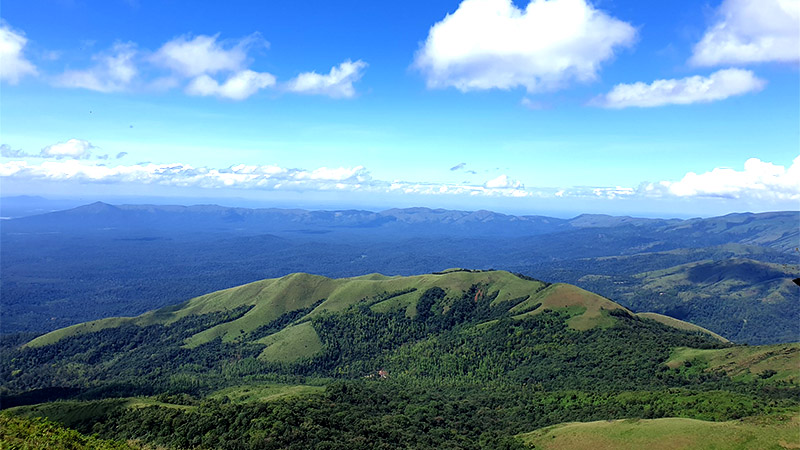
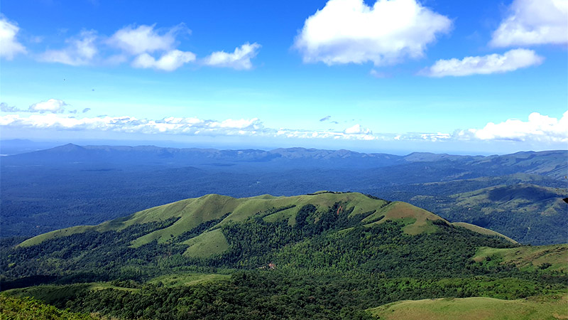
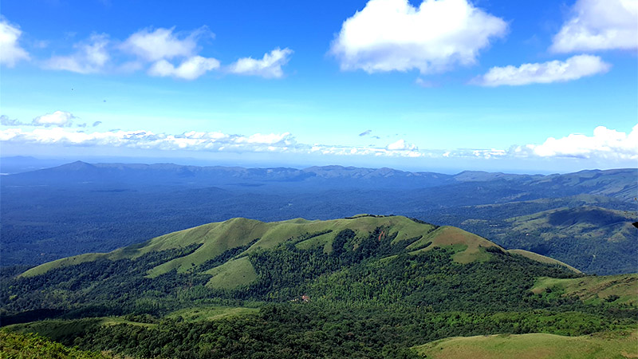
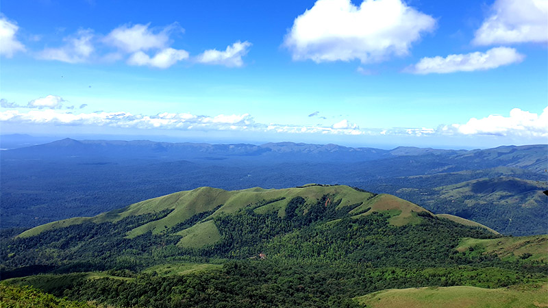

The Western Ghats are a mountain range that runs parallel to the western coast of India, stretching over 1,600 kilometers. Known for their rich biodiversity, they are home to many endemic species of flora and fauna. The range is a UNESCO World Heritage Site due to its ecological significance and variety of ecosystems, from tropical rainforests to grasslands. The Western Ghats also serve as a vital water source for many rivers in southern India. This mountain range offers breathtaking landscapes, making it a popular destination for nature enthusiasts and trekkers.
| Description | Detail |
|---|---|
| Location📍 | Western coast of India (from Gujarat to Tamil Nadu) |
| Contact📞 | +91 74188 20001 |
| Formation🏛️ | The Western Ghats were formed around 150 million years ago due to tectonic plate movements and volcanic activity, followed by erosion over time. |
| Nearest Places To Visit🗺️ | Munnar (Kerala) , Coorg (Karnataka) , Agasthyakoodam (Kerala) |